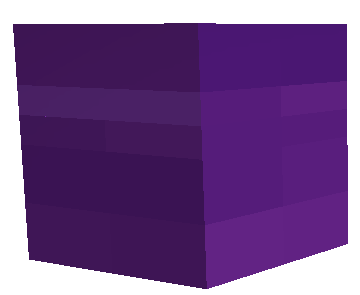
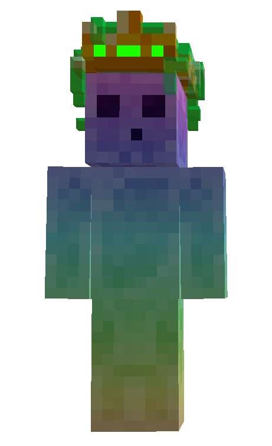
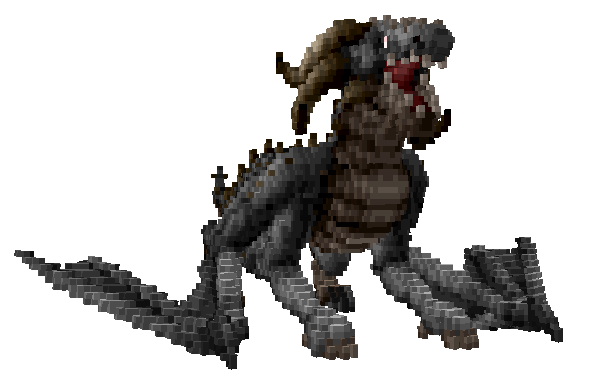

몬스터 도감 (1)
작성일: 2026.07.19 | 01:00
- 슬라임 <일반 몬스터>

o 체력 : 100~650 | 공격력 : 5~60
o 드롭템 : 경험치, 골드, 슬라임의 점액, 희미한 마정석
o 특이사항 : 8종류 슬라임이 3단계 크기로 존재한다. 포이즌 슬라임에게 피격 시 일정확률로 독에 중독된다
- 킹 슬라임 <보스 몬스터>

o 체력 : 6,500 | 공격력 : 180
o 드롭템 : 경험치, 골드, 슬라임 왕관, 희미한 마정석
- 차원룡 해츨링 <이벤트 몬스터>

o 체력 : 5,000 | 공격력 : 100
o 드롭템 : 경험치, 골드, 마력이 깃든 룬, 희미한 마정석, 체력포션 20%, 강화석 선택권
← 목록으로 돌아가기